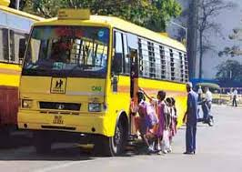

|  | The buses plying to and fro from the School are centrally controlled by SBF (School Bus Fund) of INS Satvahana. MTO of INS Satvahana is the Officer Incharge. Any query regarding bus should be addressed to INS Satvahana. The School has two buses one at NSB the other at 104 Area. These buses are used to ferry Children to different places for various events. |
|
 |